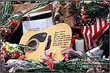

<html>

<head>
<BASE HREF="http://arts.ucsc.edu/gdead/agdl/brok.html">


<title>The Annotated "Broke-down Palace"</title>

</head>

<body>

<i>"Listen to the river sing sweet songs to rock my soul"</i>


<h2>The <i>Annotated</i> "Broke-down Palace"</h2>

An installment in <a href="gdhome.html"> The

<i>Annotated</i> Grateful Dead Lyrics.</a><br>

By <a href="david.html">David Dodd</a><br>

1997-1998 Research Associate, Music Department, University of California, Santa Cruz

<hr>

<font size=-1>

<a href="copyrigh.html">Copyright notice</a>; &#169; 1995-2001, David Dodd

</font>
<hr>
<a href="guitartimessquarelg.jpg"></a>
Subject: Union Square, NYC<br>
Date: Wed, 26 Sep 2001 22:33:56 -0500<br>
From: "Michael Berger" <michaelb@criticalimage.com><br>
<p>
As I walked around Union Square Park, NYC in the rain yesterday morning, I could feel the sorrow and hurt of so many who have been there these last two weeks. There is a palpable sense of loss that finds its way into the air we breathe in NYC. As I looked at the memorials set up in Union Square Park I came across a guitar left behind. With familiar lyrics from a Grateful Dead song written in black marker, it struck a chord visually expressing the loss of so many.
<p>
If you would like to see what I saw I have posted some images on the web page below. You will need to enter the following to view the pages:
<blockquote>
user name: peace (all lower case)<br>
password: earth (all lower case)
</blockquote>
<p>
<a href="http://www.1TimesSquare.com/union_square/">http://www.1TimesSquare.com/union_square/</a>
<p>

Michael Berger<br>
Times Square Photo Project
<hr>

<a href="#title"><b>"Broke-down Palace"</b></a><br>

Words by Robert Hunter; music by Jerry Garcia<br>

Copyright Ice Nine Publishing; used by permission.

<p>

<blockquote>

Fare you well my honey<br>

Fare you well my only true one<br>

All the birds that were singing<br>

Have flown except you alone<br>

<p>

Goin to leave this <a href="#palace">Broke-down Palace</a><br>

On my hands and my knees I will roll roll roll<br>

Make myself a bed by the waterside<br>

In my time - in my time - I will roll roll roll<br>

<p>

In a bed, in a bed <br>

by the waterside I will lay my head<br>

Listen to the river sing sweet songs<br>

to rock my soul<br>

<p>

River gonna take me<br>

Sing me sweet and sleepy<br>

Sing me sweet and sleepy<br>

all the way back back home<br>

It's a far gone lullaby<br>

sung many years ago<br>

Mama, Mama, many worlds I've come<br>

since I first left home<br>

<p>

Goin home, goin home<br>

by the waterside I will rest my bones<br>

Listen to the river sing sweet songs<br>

to rock my soul<br>

<p>

Goin to plant a <a href="#willow">weeping willow</a><br>

On the banks green edge it will grow grow grow<br>

Sing a lullaby beside the water<br>

Lovers come and go - the river roll roll roll<br>

<p>

<a href="#fare">Fare you well</a>, fare you well<br>

I love you more than words can tell<br>

Listen to the river sing sweet songs<br>

to rock my soul<br>

</blockquote>

<hr>

<h3><a name="title">"Broke-down Palace" </a></h3>

Lyric written in London, 1970. According to an interview with Hunter in a documentary film by Jeremy Marre, "Broke-down Palace," <a href="ripple.html">"Ripple"</a> and <a href="tlay.html">"To Lay Me Down"</a> were all composed in one afternoon, over a half-bottle of retsina. (The film aired on VH-1 on April 16, 1997.)
<p>
Musical details:
<ul>
<li>Key: F
<li>Time signature: Cut time
<li>Chords used: G, Am, B-flat, F, Dm, A
<li>Songbook availability:
<ul>
<li><cite><a href="songbook.html#gdvol1">Grateful Dead</a></cite>
<li><cite><a href="songbook.html#anthologyII">Anthology, vol. 2</a></cite>
</ul>
</ul>

Recorded on

<ul>

<li><cite><a href="discog1.html#american">American Beauty</a></cite>

<li><cite><a href="discog1.html#deadset">Dead Set</a></cite>

<li><cite><a href="discog1.html#dick5">Dick's Pick's, vol. 5</a></cite>

<li><cite><a href="discog1.html#dozin">Dozin' at the Knick</a></cite>

</ul>

<p>

Covered by Henry Kaiser on <cite><a href="tribute.html#eternity">Eternity Blue</a></cite>.

<p>

First performance: August 18, 1970, at the Fillmore West in San Francisco. "Broke-down Palace"

appeared in the number six spot in the first (acoustic) set, following the first <a href="ripple.html">"Ripple"</a>

and preceding the first <a href="operator.html">"Operator."</a>  <a href="truckin.html">"Truckin'"</a>

was also performed for the first time in this show.

<p>

The title is given as Hunter indicated in <cite>Box of Rain</cite>. However, on albums and in

most song lists, it is given without the hyphen: "Brokedown Palace."
<p>
This note from a reader:
<blockquote>
Subject: Broke-down Palace<br>
Date: Tue, 29 Jan 2002 22:07:39 -0600<br>
From: "Tom McKnight" <tommcknight@dixie-net.com><br>
<p>
David,
<p>
I just came across your web-site.  I commend you on a fabulous job!
<p>
I've got a little story about "Broke-down Palace" that you might
appreciate.
<p>
When I was a student at the University of Virginia, I had the fortune of
hearing Ken Kesey give a talk and reading (this was about 5 years ago).
Though his discussion was somewhat confused and disjointed, he had many
moments of genius.  One which I remember in particular was when was
discussing the death of his son.  His son had died when the high school
wrestling team's van drove off a cliff during snow storm.  Kesey went to
great lengths to discuss his struggle with grief following this tragedy.
He commented that not long after his son's death, he was invited to see the
Dead play a gig somewhere on the West Coast.  Kesey said that sometime
during the second set, the whole band turned to him (he was sitting in a
balcony seat, or was close to the stage...) and began playing "Broke-down
Palace."  Kesey recounted with tears in his eyes that it wasn't until that
moment that he really understood what art was.  He said that "All my life I
thought art was this [he stuck a fist in the air].  But at that moment I realized that art was really this
[he made a hugging motion]."
<p>
It really was a moving story.  Kesey went on to shock the English faculty
by placing a purple velvet top-hat on his head and reading, not a portion
of one of his works, but rather a children's story about a lovable,
mischievious bear - which he acted out by romping around the stage.
<p>
May he rest in peace.
<p>
Tom McKnight<br>
Oxford, Mississippi


</blockquote>
<hr>

<h3><a name="palace">Broke-down Palace</a></h3>
A reader writes:
<blockquote>
Subject: Comment on "Broke-down Palace"<br>
Date: Wed, 12 Sep 2001 09:42:29 -0400<br>
From: "browda04" <browda04@gettysburg.edu>
<p>
Dear David,<br>
I noticed in your comments of the Dead's "Broke-down Palace", you made a
reference to a 1986 science-fiction book by the same name. I thought
that you and the readers of the sight might be interested to know that
the word originated in Steinbeck's <cite>Cannery Row</cite>, published 1945. The Broke-down Palace was the name that some bums gave to
a dilapitated warehouse, where they all resided.
<p>
David Brown<br>
Asheville, NC
</blockquote>
<p>
Also, the title of a 1986 science fiction novel by Steven Brust, published by Ace.

<hr>
<h3><a name="willow">weeping willow</a></h3>
This note from a reader:
<blockquote>
Subject: Weeping willows<br>
Date: Tue, 8 Apr 1997 14:12:37 -0700<br>
From: Laurae Pearson <djlray@itsa.ucsf.edu>
<p>
Greetings,
<p>
In my exploration of the ancient Norse runes I have been learning quite a bit about sacred woods and tree lore. When I found
out it was a symbol for unlucky love I could only hum to myself "lovers come and go, the river roll, roll, rolls.."
<p>
<blockquote>
WILLOW (Salix babylonica)
The willow is another water loving tree. Willow bark contains Salicin which is used in the treatment of
rheumatic fever and various damp diseases. Her catkins, which appear in early spring before her leaves,
attract bees to start the cycle of pollination. In western tradition it is a symbol of mourning and unlucky
love. The Latin name for the weeping willow refers to the psalm in which the Hebrews mourn their
captivity in Babylon by the willows. Willow indicates cycles, rhythms and the ebb and flux.
</blockquote>
<p>
Thank you for you beautiful site!!
</blockquote>
<p>
Also worth noting is the comparison to the line in <a href="crazy.html">"Crazy Fingers"</a>: "Hang your heart on laughing willow..."
<hr>

<h3><a name="fare">Fare you well...</a></h3>

This note from a reader:

<blockquote>

Date: Sun, 28 Jan 1996 22:57:32 -0700<br>

From: "S. Polczer" intra@tigger.eon.net<br>

Subject: Brokedown Palace lyric

<p>

I looked up Brokedown Palace because I was in the Whaling Museum in

Lahaina and heard an old sailor's jingle that went:

<blockquote>

Fare thee well, fare thee well<br>

My only true love

</blockquote>

and did a double take. It was off a CD of sailors tunes that had been

recorded there, but I notice that reference wasn't included on your

page. What do you make of it?

</blockquote>

<p>

Which brought this response from another reader:

<blockquote>

Date: Mon, 06 May 96 23:20:21 -700<br>

From: Hilliard Family <khillard@llohio.wviz.org><br>

To: ddodd@alf.uccs.edu<br>

<p>

David,

<p>

It has been a while.  The site looks great--you've been busy.

A few months ago I promised you some HARP references (they're

still coming, honest).  In the meantime, my wife and some

friends and I have started playing out our little combo,

playing Irish traditional, American folk, and some accoustic

Dead songs.  We call ourselves "Harp Unstrung" and already

have a few gigs in town (Cleveland).

<p>

Anyway, I stopped by the site to check out what you have under

"Brokedown Palace" (one of our best performances), and I

see a reader has posted a question about a song called

"Farewell something"

<p>

There IS an old sailor song called "Fare Thee Well".  We do

a version of this, too.  You can catch it on Joan Baez's

second or third album.  For a real treat, check out Dylan's

version, called "Mary Ann" on, I think, "Self-Portrait" (?)

<p>

I will keep in touch.  See you at the Festival! (Blossom, 7/2)

<p>

                              Adam

</blockquote>

<p>

Thanks, Adam!

<hr>

keywords: @willow, @river, @home<br>

DeadBase code: [BROK]

<hr>

First posted: November 29, 1995<br>

Last revised: February 7, 2002
<pre>


</pre>

</body>

</html>

